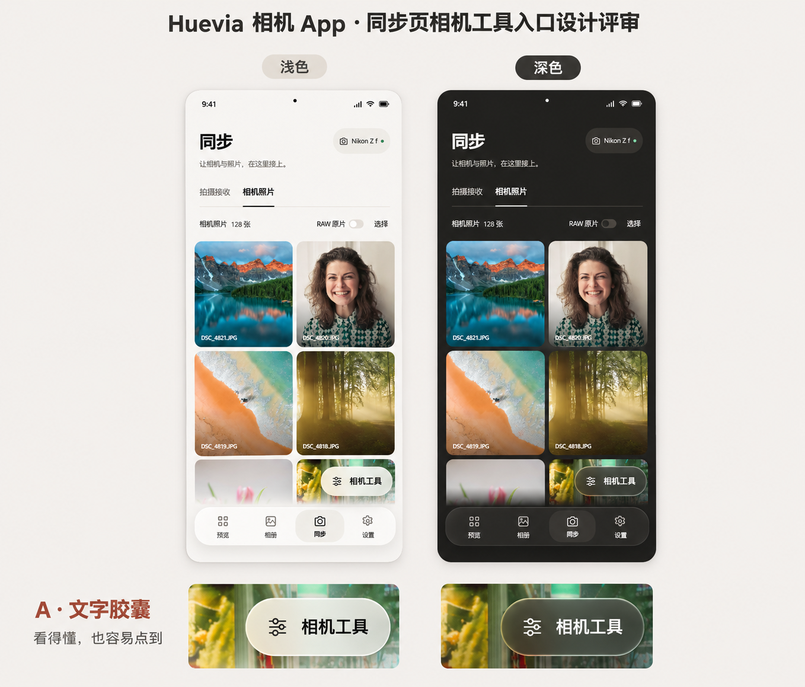
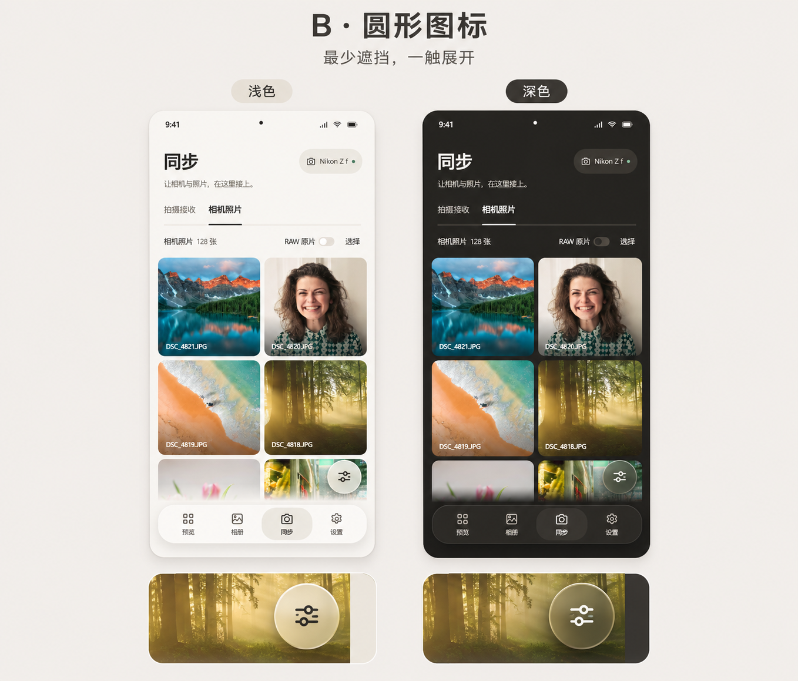
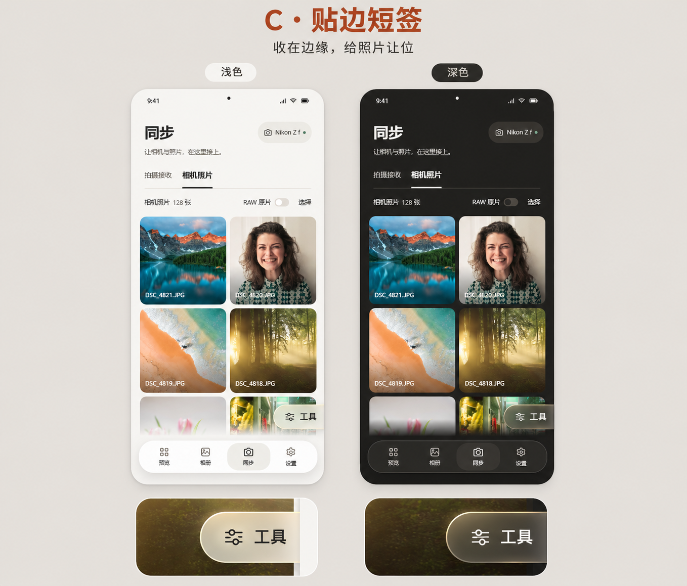

收起以后，工具可以有三种样子。
三张独立设计图，均含浅色与深色。只有收起入口不同，展开后沿用现有三个工具入口。
使用 ImageGen 生成，参考原型截图。已选 B · 圆形图标；现有原型已同步，不为每种候选另做原型，也未接入产品。
A · 文字胶囊
“相机工具”完整标签，最容易理解。约 124 × 48px；作为对比候选保留。

B · 圆形图标（已选）
52px 圆形按钮，照片遮挡最少；首次使用时对工具图标的理解要求更高。

C · 贴边短签
约 90 × 48px，右侧贴边，保留“工具”两字。显得更收敛，需要为边缘手势留出合理点击区域。

图片中的相机、照片、任务与参数均为演示，未进行相机实测。精确像素和文字仍以选定后实现为准。